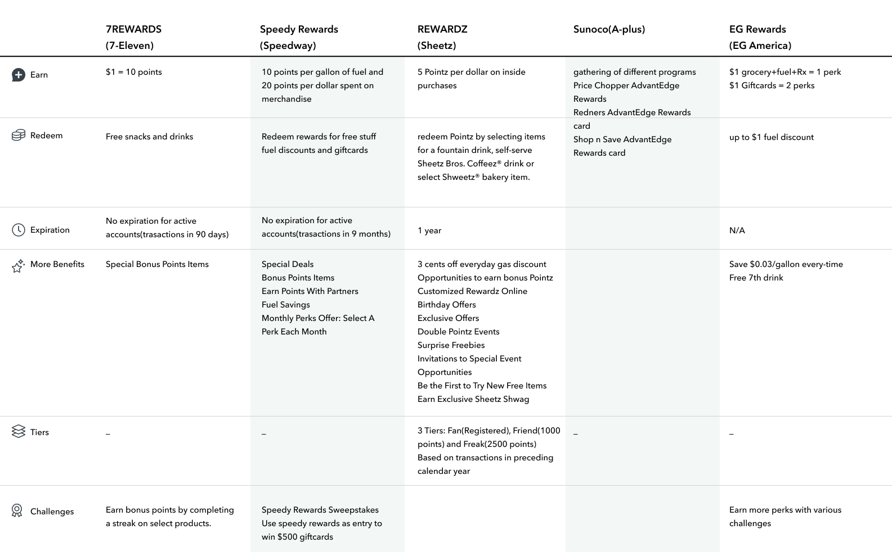
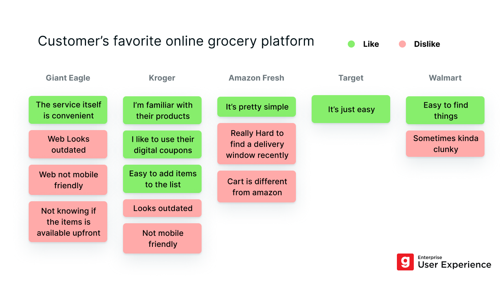

Research
User Interview
User interview is the most common method we used in our department to understand our customers. And most importantly, we can gather and analyze the qualitative data. Here's an example below.

Usability Test
Generally there are two types of information we try to get from a usability test: user's behavior(time to finish a task, success rate), and user's preferences(which version of design do they prefer, their ratings of satisfaction or ease, etc.) Although during the pandemic it's rather inconvenient to conduct any field study, we tried to mock up the real life experience for our testers. In this picture below, we showed our customers the mock-up price tags in a real store shelf, and ask them to go through our app prototype to see if they understand what to do next.

Paper Prototyping
I personally prefer to sketch on papers in the ideation stages, which makes paper prototyping the easiest way for me to do a fast usability test.


Heuristic Evaluations
Heuristic evaluation is the fastest way to find out usability issues in an app. It could be the first research for any redesign projects since a lot of points here need to be evaluated or proved by further usability tests.

Competitor Analysis
Our competitor analysis can vary from a simple investigation to a big user study depends on the project needs. It's always valuable and deserves to be done before or during the design stages.
 